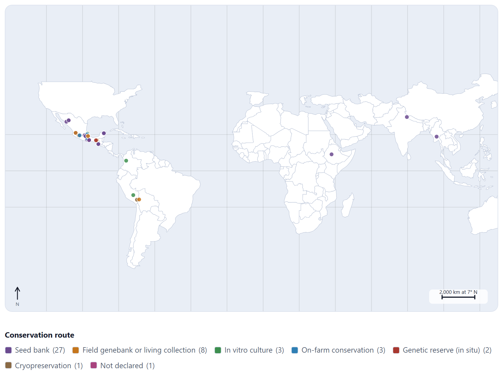
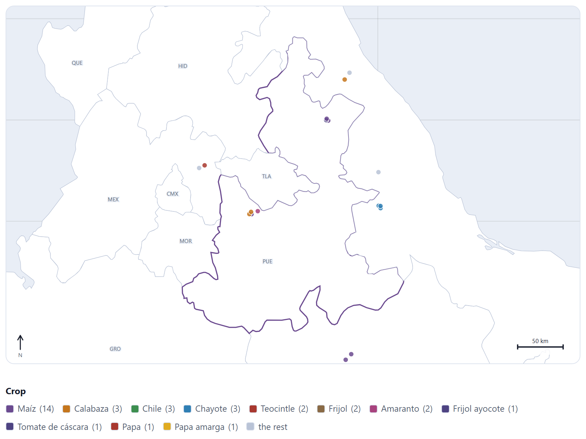
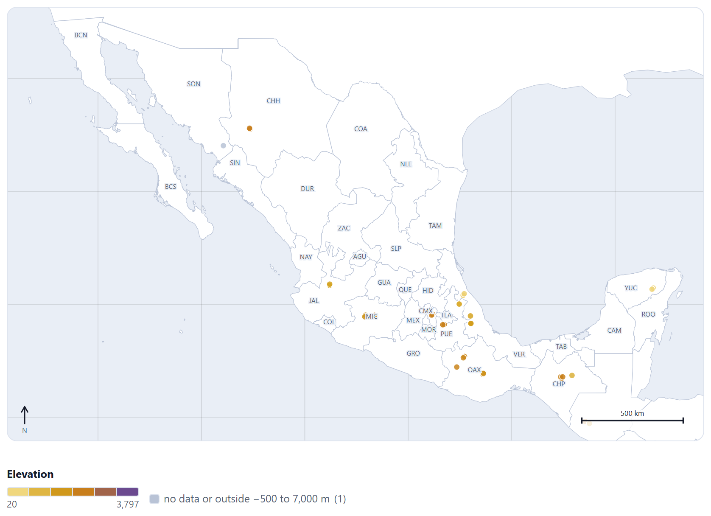
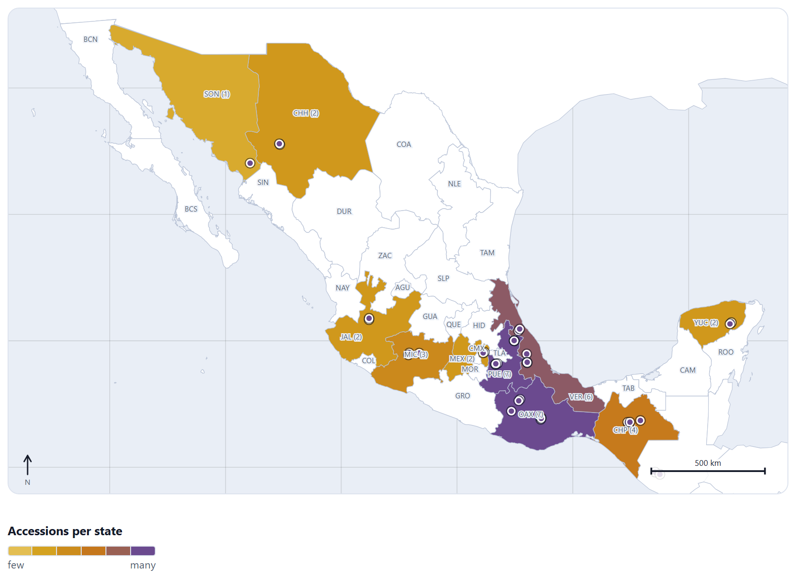
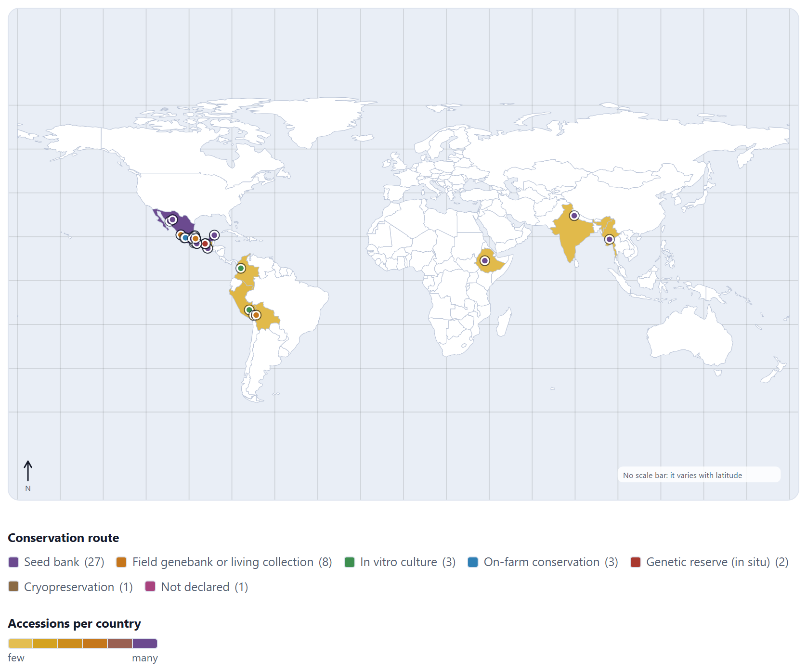
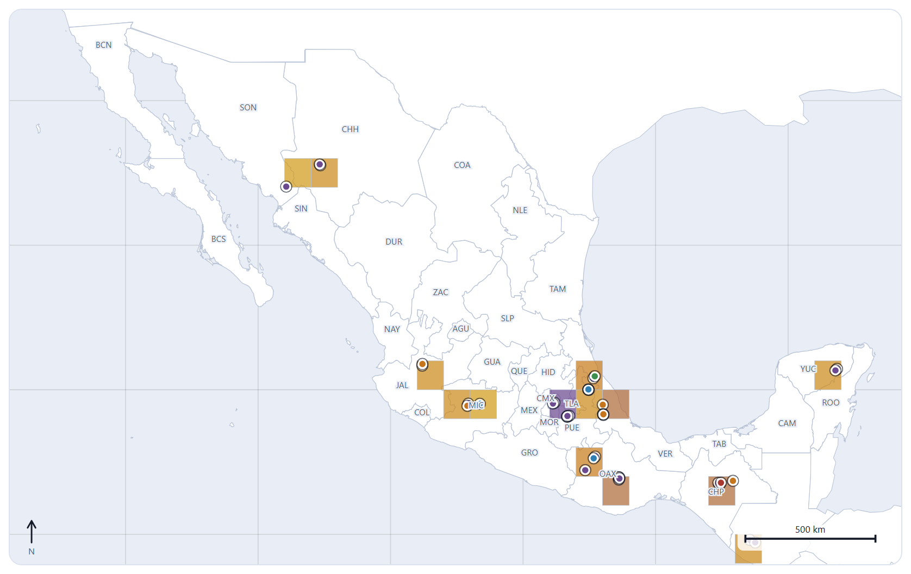
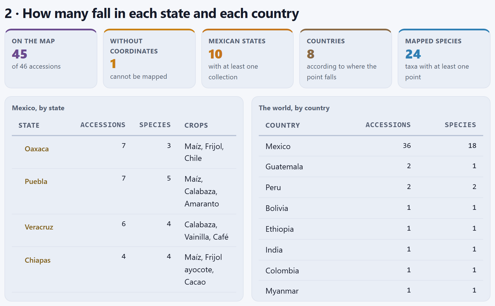

The collecting map
Block 4 puts every accession at the site where it was collected. The map is drawn inside the app, with outlines that travel with it, so it works offline and no coordinate ever leaves your computer. It lets you see the collection at a glance—what there is, in which conservation route, at what elevation—, spot the point that landed where it should not, and count how many accessions fall in each state, each country or each cell of a grid, which is the gateway to Blocks 5 and 6.
- 4.1A map that needs no internet
- 4.2From the sphere to the screen: the projection
- 4.3Which state and which country does each point fall in?
- 4.4The extent: your data, Mexico, the world or a single state
- 4.5Color, size and filters of the points
- 4.6The choropleth and the grid
- 4.7The counts by state and by country
- 4.8Taking the map and the points with you
4.1A map that needs no internet
Block 4 takes the accessions you loaded in Block 2 (Chapter 2), with whatever you corrected in Block 3 (Chapter 3), and draws one point for each accession that has decimal latitude and longitude. There is nothing to click when you open it: the map, its legend, the summary boxes and the tables are rebuilt every time you open the block. If there is no passport data yet, instead of the map you see Load your accessions in Block 2 first.
![Section 1 of Block 4: the controls Extent set to All of Mexico, Point color set to Conservation route, Choropleth, Grid, Size, Crop, Route, the state codes button and the Map title field; below, the map of Mexico with its 32 states labeled with their codes, the points colored by route, the north arrow and a 500 km scale bar; the legend with Seed bank (27), Field genebank or living collection (8), In vitro culture (3), On-farm conservation (3), Genetic reserve (in situ) (2), Cryopreservation (1) and Not declared (1); and the buttons Export SVG, Export PNG (2×) and Points as CSV](../img/en/b4-mexico.png)
The block has two sections. The first, 1 · The accessions on the map, gathers the controls, the map, the legend and the export buttons on one card (Figure 4.1). The second, 2 · How many fall in each state and each country, gives five summary boxes and two tables (Section 4.7). At the end, a box reminds you where the outlines come from.
Where the outlines come from
The outlines come from Natural Earth, a public-domain map data set, and are stored inside the app, in two files in the data/ folder:
| File | Natural Earth data set | What it holds |
|---|---|---|
| mexico-states.js | admin-1 (states and provinces) at 1:10 million | The 32 federal entities of Mexico, simplified with the Douglas–Peucker algorithm at a tolerance of 0.004° (about 400 m), with coordinates rounded to four decimals. Each state carries its name and its three-letter code (OAX, PUE, CMX…). |
| world.js | admin-0 (countries) at 1:110 million | The outlines of 174 countries, simplified to two decimals and without Antarctica. |
The difference in scale is deliberate. Mexico is drawn with the detail a state-level map calls for; the rest of the world, with the coarse line that is enough to place a collection in its country. Neither is fit to decide whether a point falls on one side or the other of a municipal boundary, or a hundred meters from the coast.
An online viewer asks a server for the tiles of the area you are looking at; here there is no request at all. That lets you work in the field without a signal, and it is no small matter when the coordinates belong to populations of crop wild relatives, to species prone to illegal collection or to the plots of custodian families (Section I.3)—data that many collections do not publish with all their decimals.
4.2From the sphere to the screen: the projection
A coordinate is an angle on a sphere; the screen is flat. The app uses the simplest projection that gives a reasonable map of a country: the equirectangular projection (or plate carrée), in which meridians and parallels are straight lines at equal spacing, with one correction: the width of each degree of longitude is multiplied by the cosine of the central latitude of the extent.
A degree of latitude measures almost the same everywhere on Earth (about 111 km), but a degree of longitude shrinks towards the poles: it measures 111 km × cos φ at latitude φ. With an extent running from longitude λ0 to λ1 and from latitude φ0 to φ1, the central latitude is φm = (φ0 + φ1)/2, and each point is taken to the screen with:
where s is the number of pixels per degree of latitude, the largest value at which the extent fits in the 900 × 560 canvas leaving a 10 px margin, and ox, oy center the drawing. The y coordinate grows downwards, which is why the latitude is subtracted from the maximum: north stays at the top. The shape is faithful near φm; for a country or a region, that is enough.
The All of Mexico extent runs from −118.5 to −86.6 in longitude and from 14.3 to 32.8 in latitude. MEX-ZM-0001 lies at 17.6871, −97.2788.
| φm = (14.3 + 32.8)/2 = 23.55° | k = cos 23.55° = 0.91671 |
| width = 31.9° × 0.91671 = 29.243 | height = 32.8 − 14.3 = 18.5° |
| s = min(880/29.243, 540/18.5) = min(30.09, 29.189) = 29.189 px per degree | |
| ox = 10 + (880 − 29.243 × 29.189)/2 = 23.21 · oy = 10 | |
| x = 23.21 + (−97.2788 + 118.5) × 0.91671 × 29.189 = 23.21 + 567.84 = 591.0 | |
| y = 10 + (32.8 − 17.6871) × 29.189 = 10 + 441.13 = 451.1, the center of the circle in the app’s SVG | |
Without the correction, the width would be 31.9° and Mexico would come out 9% wider than it really is at that latitude.
The scale bar, the north arrow and the graticule
In the lower right corner, the scale bar shows a round distance—1, 2, 5, 10, 25, 50, 100, 200, 250, 500, 1,000, 2,000 or 5,000 km—that fits in 140 pixels of the canvas. It is measured at the central latitude: on the map of Mexico, 1° of longitude at 23.55° of latitude measures 101.93 km by the haversine formula (Section 3.5) and takes up 26.76 px, so each pixel is worth 3.81 km and the bar chosen is the 500 km one, 131 px long. That measure is exact only at the central latitude: at latitude φ, a horizontal pixel measures cos φ / cos φ0 times what the bar says. That is why the app works out how much the horizontal scale changes within the extent and decides which bar is honest: if it changes by less than 10% (Mexico, which runs from 14° to 33° and stays under 9%, or any single state), the bar stands alone; if it changes by up to 35%, the bar says at which latitude it holds, such as 2,000 km at 7° N in the automatic extent of Figure 4.2; beyond that, as with the whole world, no bar is drawn and the map says No scale bar: it varies with latitude instead (Figure 4.6). In the lower left corner is the north arrow, which always points up. Behind the land, a graticule of meridians and parallels is drawn every 20° if the extent spans more than 60° of longitude, every 5° if it spans more than 14°, every 2° if it spans more than 4°, and every degree in smaller extents.
On a map of a single state or of Mexico, the bar holds for the whole map with a small error. In a tall extent it no longer does: the bar that says “at 7° N” is true at that latitude and, away from it, east–west distances are exaggerated, more and more towards the poles; over the whole world the error would exceed 80%, which is why there is no bar there. To measure the distance between two collecting sites, do not use the bar; use the distance column of the duplicates (Chapter 3) or the calculations of Blocks 5 and 6, which work on the sphere.
4.3Which state and which country does each point fall in?
The app does not trust the passport text to tell where an accession is. It does not read the state written in COLLSITE or the country in ORIGCTY: it looks at where the point falls and searches for the state or the country whose outline contains it. This is called a point-in-polygon test.
A ray is cast eastwards from the point, and the number of times it crosses the polygon’s boundary is counted. If it crosses an odd number of times, the point is inside; if even, outside. The rule respects holes: a point inside a hole crosses the outer boundary and the hole’s boundary, twice, and ends up outside; and it works equally for states with islands, which are several rings. To avoid testing all 32 full outlines against every point, the app first discards the states whose bounding rectangle does not contain the point, and runs the fine test only on those that remain. The same goes for countries.
With the example collection, the test assigns a state to the 36 accessions that fall in Mexico, and for all of them it matches the state written at the start of their collecting site. Those that do not match their passport are two, and both are seeded errors (Section I.7):
| Accession | What the passport says | Where the point falls | What the app does |
|---|---|---|---|
| MEX-ZM-0039 Tuxpeño de la costa | ORIGCTY = MEX; site “Veracruz, Tlalixcoyan”; 18.8100, 96.0600 | Myanmar (Burma), no state | It counts it in Myanmar, not in Mexico or in Veracruz. It is the longitude without its sign that Block 3 diagnoses (Section 3.2). |
| MEX-PH-0041 Frijol tepari | ORIGCTY = MX; site “Sonora, Álamos” | Mexico, Sonora | It counts it in Mexico and in Sonora: the point is right, even though the country code is misspelled. |
The accession without coordinates, MEX-ZM-0043 (Maíz ancho de riego, site “Por el rumbo de Guerrero”), does not appear on the map or in the counts, even though its site names a state: the Without coordinates box shows 1. Points at (0, 0) and out-of-range coordinates (latitude beyond 90° or longitude beyond 180°) are not drawn either.

The map is the fastest way to see a coordinate error: a maize from the Gulf coast shows up on the other side of the world (Figure 4.2). Correct it in Block 3—Fix in section 2—and return to Block 4: the point lands in Veracruz, at 18.81, −96.06, the country table loses Myanmar and Mexico rises from 36 to 37 accessions, Veracruz rises from 6 to 7 accessions and from 4 to 5 species (Zea mays is added), and the Countries box drops from 8 to 7. What does not change is the automatic extent, which still spans from the Americas to India, because those accessions really are from Ethiopia and India.
Block 3 compares the point with the rectangle of the declared country, with a one-degree margin; it catches errors of hundreds or thousands of kilometers (Section 3.2). Block 4 assigns the point to the outline of a state, and that is where the fine error shows: a point of a maize “from Puebla” that falls in Tlaxcala, or one “from Oaxaca” that falls in the sea, passes the Block 3 check and gives itself away here, in the state table or in the point’s record.
4.4The extent: your data, Mexico, the world or a single state
The Extent menu decides which part of the Earth fills the canvas. Points outside the extent are not drawn, but they still count in the summary boxes, the tables and the points file (Sections 4.7 and 4.8).
| Option | What it shows |
|---|---|
| Fit to my data | The default. The rectangle that contains all the points, with a 15% margin on each side (at least 0.4°), and never less than 1.5° wide or high, so that a collection from a single municipality does not end up as a close-up with no landmarks. With the example collection it runs from −139.7 to 126.8 in longitude and from −22.7 to 36.4 in latitude (Figure 4.2). |
| All of Mexico | The rectangle of Mexico, from −118.5 to −86.6 and from 14.3 to 32.8: it draws 38 of the 45 points (Figure 4.1). |
| The world | From −180 to 180 in longitude and from −60 to 84 in latitude (Figure 4.6). |
| A single state (the 32, by name) | The rectangle of the state, with an 8% margin. The neighboring states and their points are drawn too; the chosen one gets the thick outline, in purple (Figure 4.3). |
You can also reach a state without the menu: tap the state on the map to zoom into it, and tap it again to go back to All of Mexico. The buttons with the name of each state in the state table do the same (Section 4.7).

When the states are drawn
The 32 states are drawn only when the extent spans 45° of longitude or less and touches the rectangle of Mexico. In a wider extent, Mexico is drawn as one more country, with the 1:110 million outline, and the state codes disappear. That is why, with the example collection, the automatic extent shows no states: the accessions from Ethiopia and India make it as wide as the world. If your collection comes from Mexico and other countries, choose All of Mexico to see the states.
The state codes button, on by default, labels each state with its three-letter code at the point of its interior farthest from the edge (in its largest part, if the state has islands, so that the code of Colima does not land in the sea). If two codes overlap, the app shifts one of them by a few pixels; a code without a count that fits nowhere is left out. The codes carry a halo in the background color so that they can be read over points and lines; with a state choropleth, the code also carries the count in parentheses (Figure 4.5). Turn it off when the map is going into a publication and the labels get in the way. Watch out for two codes: MEX is the State of Mexico and CMX is Mexico City, not the country.
Hovering over and tapping a point
When you hover over a point, the point grows and, below the map, a line summarizes the accession: number, name, taxon, site, the state where the point falls, the elevation and the route. For MEX-ZM-0001 it reads MEX-ZM-0001 · Maíz azul de Apoala · Zea mays · Oaxaca, Santiago Apoala · Oaxaca · 1993 m · Seed bank. Tapping the point opens its record in Block 2, to review or correct it. The foot of the card reminds you: Tap a point to open its record; tap a state to zoom into it.
4.5Color, size and filters of the points
The Point color menu chooses which passport variable colors the points. There are eight, plus A single color:
| Option · descriptor | Type | Legend with the example collection |
|---|---|---|
| Conservation route · active route | categorical | The default. Seed bank (27), field genebank or living collection (8), in vitro culture (3), on-farm conservation (3), genetic reserve (2), cryopreservation (1) and not declared (1). The route is the one declared in GP_CONS or, if there is none, the one deduced from STORAGE, as in Chapter 2. |
Crop · CROPNAME | categorical | Maíz (14), Calabaza, Chile and Chayote (3 each)…, and the rest. |
| Species · genus and epithet | categorical | Zea mays (17), Capsicum annuum and Sechium edule (3)…, and the rest. |
Biological status · SAMPSTAT | categorical | Traditional cultivar/landrace (38), wild (4), natural (2), breeder’s line (1). |
Country of origin · ORIGCTY | categorical | Mexico (36), Guatemala and Peru (2), Bolivia, Ethiopia, India, Colombia and MX (1). Here the passport text does rule, not where the point lies. |
Collecting source · COLLSRC | categorical | Field (23), backyard, kitchen or home garden (6), farm store (5)… ten sources in all. |
Elevation · ELEVATION | continuous | From 20 to 3,797 m; the 25,000 m one stays gray, off the scale (Figure 4.4). |
Collecting year · year of COLLDATE | continuous | From 2014 to 2022. |
With a categorical variable, the app counts how many points there are of each value and gives a color from its palette to the eleven most frequent values; the rest go in gray, under the label the rest. The legend lists each value with its number of points in parentheses. Crop and Species have more than eleven values in the example collection (23 crop names as written and 24 taxa), so in those two the gray lumps several together. Note that the crop counts what is written: Maíz (14) and Maiz without the accent, the one of the seeded duplicate, are two different values until you resolve the duplicate in Block 3.
With a continuous variable, the color comes from a ramp that runs from pale gold to gold, ochre and purple, linear between the minimum and the maximum of the points. The pale gold at the low end stands apart from the greyish blue of the sea and the white of the land. Points with no value go in gray and off the scale. For elevation, an empty field means no data, not 0 m, and an elevation that is impossible on land—below −500 m or above 7,000 m—also goes in gray, so that a data-entry error does not stretch the scale. The legend shows the ramp in six steps with the minimum and the maximum below its ends (years without a thousands separator: 2014, 2022) and, if there are gray points, how many: for elevation, no data or outside −500 to 7,000 m (1).

Figure 4.4 is the counterpart of the elevation histogram in Block 2 (Figure 2.7), where the same absurd value stretches the axis until almost all the bars sit in the first two classes. Here the impossible value does not enter the scale: the 20 to 3,797 m range is shared among the remaining 44 points, and the gray point in Sonora stays in view as a pending task. Tap it, correct the elevation in its Block 2 record and, when you come back, the point takes its color and the legend stops counting it in gray.
Size by stock
The Size menu has two options. With fixed size, the default, every point has a 4 px radius. With size by stock, the radius grows with the square root of the stock (GP_STOCK): r = 2.5 + 5.5 √(stock / maximum). With the square root, the area of the circle, which is what the eye compares, grows in proportion to the stock. In the example collection the maximum is 3,200 seeds, and the radii range from 2.8 to 8 px. It is the way to see at a glance where the scarce material is, the material that should be regenerated (Chapter 8).
The crop and route filters
The Crop and Route menus leave on the map a single crop (from those written in CROPNAME, in alphabetical order) or a single route (from those in use). Unlike the extent, the filter does change everything else: the summary boxes, the tables, the choropleth, the grid and the points file count only what is filtered. With the crop Maíz, 14 points remain; with the route Field genebank or living collection, 8. To go back to everything, choose all crops and all routes.
4.6The choropleth and the grid
The points say where each accession is; when there are many, they overlap and no longer say how many there are in each place. That is what the choropleth, which paints each unit by its count, and the grid, which counts in equal cells, are for.
The choropleth
The Choropleth menu has three options, besides no choropleth:
- accessions per state: each Mexican state painted by how many points fall in it;
- species per state: by how many distinct species (genus and epithet) there are among those points;
- accessions per country: each country, by how many points fall in it. If the map shows the states, they are all painted with the value of Mexico.
The color comes from the same ramp as the points, but starts at 15% so that a unit with a single accession stands apart from empty land: a unit with n accessions is painted with the shade 0.15 + 0.85 × n / maximum. Units without accessions stay white. The legend only says few and many; the figures are in the codes on the map and in the tables (Section 4.7). Over a choropleth or a grid, each point carries a thick white border and a thin dark ring, so that it shows even when it has the same color as the unit that contains it.

With the example collection, the accessions per state choropleth paints ten states: Oaxaca and Puebla with 7, Veracruz with 6, Chiapas with 4, Michoacán with 3, Chihuahua, Yucatán, the State of Mexico and Jalisco with 2, and Sonora with 1 (Figure 4.5). The species choropleth changes the order: Puebla comes out on top with 5 species, Veracruz and Chiapas with 4, and Oaxaca drops to 3, because four of its seven accessions are maize. The two readings answer different questions: where most has been collected, and where the most collected diversity is—the diversity that Block 5 measures properly.
Chihuahua, with two accessions from the same site, is painted as strongly as Jalisco with two of two species, and its huge area draws more attention than that of Tlaxcala. A choropleth of absolute counts corrects neither for the size of the unit nor for collecting effort. To compare regions, use the grid, with equal cells, or the rarefied indices of Block 5 (Chapter 5).

The country choropleth makes the error of Figure 4.2 even more visible: a whole country painted by a single misplaced point (Figure 4.6). With 36 accessions against 2 at most in the others, Mexico takes the purple and every other country the lightest shade; in a collection like this one, the country choropleth only tells “Mexico” from “the rest”.
The grid
The Grid menu lays square cells of 0.25°, 0.5°, 1° or 2° over the map, aligned with whole degrees: the 1° cell containing the point (λ, φ) runs from ⌊λ⌋ to ⌊λ⌋ + 1 and from ⌊φ⌋ to ⌊φ⌋ + 1. Only cells with at least one point are drawn, semi-transparent, in the shade of the ramp that matches their count (from 25% of the ramp, so that a single-point cell shows). When you hover over a cell, the app shows its number of accessions.
The cell size changes the answer (Table 4.2): with small cells nearly every cell holds a single point; with large cells, different sites are lumped together. Correcting the maize from Veracruz does not change the number of 1° cells: its point leaves a cell in Myanmar and occupies another in Veracruz. A 1° cell measures about 111 km from north to south and, at the latitude of central Mexico, about 105 km from east to west; its area in square kilometers changes with latitude, which is worth remembering when comparing cells in Chihuahua and Chiapas. The grid in this block is for looking; the cell-based analysis is done in Blocks 5 and 6 (Chapters 5 and 6), with their own cell size.

| Cell | Occupied | With a single point | Maximum | The most populated cell |
|---|---|---|---|---|
| 0.25° | 29 | 18 | 4 | A tie: San Pablo Villa de Mitla, Oaxaca, and San Andrés Cholula, Puebla. |
| 0.5° | 26 | 14 | 4 | A tie between Mitla, Cholula and the cell of Coatepec and Huatusco, Veracruz. |
| 1° | 21 | 9 | 6 | −99° to −98°, 19° to 20°: Cholula and Texcoco. |
| 2° | 18 | 7 | 7 | −98° to −96°, 16° to 18°: the seven points of Oaxaca. |
4.7The counts by state and by country
Section 2 · How many fall in each state and each country opens with five summary boxes and goes on with two tables. Everything is counted with the points left by the crop and route filters, regardless of the extent, and by the place where each point falls (Section 4.3).
| Box | Before | After | What it counts |
|---|---|---|---|
| On the map | 45 | 45 | The accessions with usable coordinates, of 46 accessions. |
| Without coordinates | 1 | 1 | Those that cannot be mapped (MEX-ZM-0043). The box turns ochre while there is any. |
| Mexican states | 10 | 10 | The states with at least one point. The corrected maize falls in Veracruz, which already had collections. |
| Countries | 8 | 7 | The countries according to where the point falls: Myanmar drops out after the correction. |
| Mapped species | 24 | 24 | The taxa (genus and epithet) with at least one point. |

The Mexico, by state table gives, for each state with collections, from the one with the most to the one with the fewest, the number of accessions, of species and up to three crops. The state name is a button that zooms the map into it. With the example collection, Oaxaca and Puebla lead with 7 accessions; after the correction, Veracruz catches up with 7 and 5 species (Table 4.4). If no accession falls in Mexico, the table says so: No accession falls in Mexico.
| State | Accessions | Species | Crops (up to three) |
|---|---|---|---|
| Oaxaca | 7 | 3 | Maíz, Frijol, Chile |
| Puebla | 7 | 5 | Maíz, Calabaza, Amaranto |
| Veracruz | 7 (was 6) | 5 (was 4) | Calabaza, Vainilla, Café |
| Chiapas | 4 | 4 | Maíz, Frijol ayocote, Cacao |
| Michoacán | 3 | 3 | Teocintle, Aguacate, Frijol |
| Chihuahua · Yucatán · México · Jalisco | 2 each | 1 · 2 · 2 · 2 | Maíz · Maíz, Chile · Teocintle, Trigo · Chile, Agave |
| Sonora | 1 | 1 | Frijol tepari |
The The world, by country table gives accessions and species for each country, with the country name in the interface language. Before the correction: Mexico 36 (18 species), Guatemala 2, Peru 2, and Bolivia, Ethiopia, India, Colombia and Myanmar with 1; afterwards, Mexico 37 and Myanmar disappears. The tepary bean counts in Mexico even though its passport says MX, because the point rules. If a point does not fall inside any country on the map—in the sea, for example—, the app counts it in the country declared in its passport; if no country is declared either, it is left out of the table and a note below says how many there are: usually points at sea, that is, coordinates with an error.
They are the first geographic portrait of the collection: where collecting effort is concentrated and which states or countries are missing. The state table is the starting point for Block 5, which computes the diversity of each state, and for Block 6, which looks for uncollected areas. If a state shows fewer accessions than you expected, check the records of its points: one of them probably falls in the neighboring state.
4.8Taking the map and the points with you
The Map title (optional) field writes a title in bold in the upper left corner of the map; it shows on screen and goes into the exports. Below the map, three buttons save what you see:
| Button · file | What it saves |
|---|---|
| Export SVG collecting-map.svg | The vector map, 900 × 560 units, with everything in view: extent, colors, choropleth, grid, codes, title, scale and north arrow. It enlarges without losing sharpness and can be edited in any vector drawing program. The legend is not included: it sits on the page, outside the drawing. |
| Export PNG (2×) collecting-map.png | The same map as an image, at twice the resolution: 1,800 × 1,120 pixels, with a background. If the browser fails to convert it, the app warns Could not convert to PNG; download the SVG instead. |
| Points as CSV (with state and cell) map-points.csv | One row per point, with the crop and route filters applied but regardless of the extent: with the example collection, 45 rows plus the header. |
The SVG and the PNG are redrawn for the file with the fixed colors of the light theme, even if you are working in the dark theme: on screen the map uses the theme colors, which change with it, and a file has to look the same everywhere, on white paper or on a slide. That is why the exported SVG carries no color variables, only literal values.
| ACCENUMB | TAXON | CROPNAME | DECLATITUDE | DECLONGITUDE | ELEVATION | STATE | POINT_COUNTRY | PASSPORT_COUNTRY | CELL_1DEG | ROUTE |
|---|---|---|---|---|---|---|---|---|---|---|
| MEX-ZM-0001 | Zea mays | Maíz | 17.6871 | -97.2788 | 1993 | Oaxaca | MEX | MEX | -98|17 | seed |
| MEX-ZM-0039 | Zea mays | Maíz | 18.81 | 96.06 | 20 | MMR | MEX | 96|18 | seed | |
| MEX-PH-0041 | Phaseolus acutifolius | Frijol tepari | 27.028 | -108.937 | 25000 | Sonora | MEX | MX | -109|27 | seed |
The columns the block adds are the valuable ones: STATE, the state where the point falls (empty outside Mexico); POINT_COUNTRY, the country where it falls, in three letters, next to PASSPORT_COUNTRY, the one declared in ORIGCTY; CELL_1DEG, the 1° cell as “longitude|latitude” of its south-west corner (-98|17 is the cell from −98° to −97° and from 17° to 18°); and ROUTE, the conservation route with its internal code (seed, field, invitro, cryo, insitu, onfarm). Sorting the file by the two country columns, or filtering the rows where they differ, is the fastest way to find, in a large collection, the points that do not fall where the passport says: in the example, exactly the two accessions of Section 4.3 stand out.
The figure studio
When you hover over the map, the figure studio button appears in its corner, the same one as for the Block 2 charts (Section I.6); the In this block index also offers it next to section 1. The studio opens the map in split screen to adjust the text size and the line width, change the palette and export to PNG, SVG, PDF or TIFF in millimeters or inches, at 300, 600 or 1,200 dpi, which is what journals usually ask for. Since the on-screen map uses the theme colors, the studio can export it with those of the light theme even if you work in the dark one.
When something goes wrong
| What you see | Why it happens and what to do |
|---|---|
| Load your accessions in Block 2 first. | There is no passport data. Load your collection or the example one (Chapter 2). |
| An accession does not appear on the map | It lacks the decimal latitude or longitude, they are (0, 0) or out of range; or a crop or route filter left it out. If it only has degrees, minutes and seconds, Block 3 offers to convert them (Section 3.4). |
| The automatic map shows half the world | Some point lies far from the rest: another continent or a lost sign. Look at where the isolated point falls; if it is an error, correct it in Block 3. If it is real, choose All of Mexico or a single state. |
| The states and their codes are not shown | The extent spans more than 45° of longitude or does not touch Mexico. Choose All of Mexico or a single state; also check that state codes is on. |
| An accession counts in another state or another country | The point falls there, whatever the passport says. Tap the point, check the coordinate in the record and compare it with the collecting site. |
| With elevation, a point comes out gray | It has no elevation, or the one it has is impossible (outside −500 to 7,000 m), as in Figure 4.4. Tap it and correct the value in its record. |
| A value comes out gray as the rest | Only the eleven most frequent values get their own color. Filter by crop or by route. |
| If you have just loaded or corrected the collection | then look at the automatic extent first: an isolated point on the other side of the map is almost always a lost sign. |
| If the point falls in a state or country other than the passport’s | then tap it, check the coordinate in its record and decide whether the error is in the coordinate or in the text. |
| If you want to see where collecting effort is concentrated | then use the grid, with equal cells, rather than the accessions choropleth. |
| If you are looking for scarce material | then use size by stock and filter by the route you are interested in. |
| If the map is going into a publication | then give it a title, decide whether to keep the state codes and export it as SVG or from the figure studio; save the points CSV as well. |
The map does not modify the passport; Blocks 5 and 6 use the same points and states.